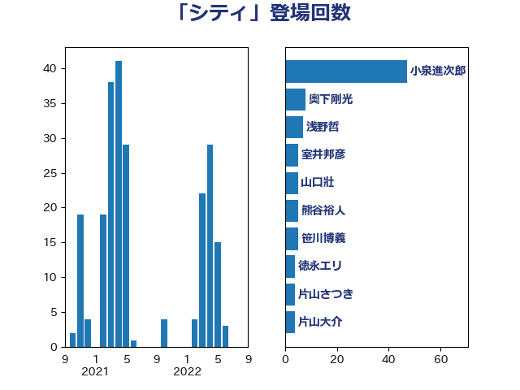

単語「シティ」

| 小泉進次郎 | 自由民主党 | 47 回 |
| 奥下剛光 | 日本維新の会 | 8 回 |
| 浅野哲 | 国民民主党 | 7 回 |
| 室井邦彦 | 日本維新の会 | 5 回 |
| 山口壯 | 自由民主党 | 5 回 |
| 熊谷裕人 | 立憲民主党 | 5 回 |
| 笹川博義 | 自由民主党 | 5 回 |
| 徳永エリ | 立憲民主党 | 4 回 |
| 片山さつき | 自由民主党 | 4 回 |
| 片山大介 | 日本維新の会 | 4 回 |
| 高木かおり | 日本維新の会 | 4 回 |
| 小倉將信 | 自由民主党 | 3 回 |
| 滝沢求 | 自由民主党 | 3 回 |
| 畦元将吾 | 自由民主党 | 3 回 |
| 赤羽一嘉 | 公明党 | 3 回 |
| 宮崎政久 | 自由民主党 | 2 回 |
| 小宮山泰子 | 立憲民主党 | 2 回 |
| 斉藤鉄夫 | 公明党 | 2 回 |
| 朝日健太郎 | 自由民主党 | 2 回 |
| 玉木雄一郎 | 国民民主党 | 2 回 |
| 田村貴昭 | 日本共産党 | 2 回 |
| 萩生田光一 | 自由民主党 | 2 回 |
| 三木亨 | 自由民主党 | 1 回 |
| 中島克仁 | 立憲民主党 | 1 回 |
| 中曽根康隆 | 自由民主党 | 1 回 |
| 北神圭朗 | 無所属 | 1 回 |
| 土屋品子 | 自由民主党 | 1 回 |
| 堀場幸子 | 日本維新の会 | 1 回 |
| 塩川鉄也 | 日本共産党 | 1 回 |
| 奥野総一郎 | 立憲民主党 | 1 回 |
| 寺田静 | 無所属 | 1 回 |
| 山下芳生 | 日本共産党 | 1 回 |
| 山口那津男 | 公明党 | 1 回 |
| 山岡達丸 | 立憲民主党 | 1 回 |
| 平山佐知子 | 無所属 | 1 回 |
| 早稲田ゆき | 立憲民主党 | 1 回 |
| 柿沢未途 | 無所属 | 1 回 |
| 泉健太 | 立憲民主党 | 1 回 |
| 渡辺周 | 立憲民主党 | 1 回 |
| 渡辺孝一 | 自由民主党 | 1 回 |
| 猪口邦子 | 自由民主党 | 1 回 |
| 矢倉克夫 | 公明党 | 1 回 |
| 石川大我 | 立憲民主党 | 1 回 |
| 竹谷とし子 | 公明党 | 1 回 |
| 笠浩史 | 無所属 | 1 回 |
| 緑川貴士 | 立憲民主党 | 1 回 |
| 美延映夫 | 日本維新の会 | 1 回 |
| 船田元 | 自由民主党 | 1 回 |
| 茂木敏充 | 自由民主党 | 1 回 |
| 藤井比早之 | 自由民主党 | 1 回 |
| 角田秀穂 | 公明党 | 1 回 |
| 金子恭之 | 自由民主党 | 1 回 |
| 鈴木義弘 | 国民民主党 | 1 回 |
| 青木愛 | 立憲民主党 | 1 回 |
| 音喜多駿 | 日本維新の会 | 1 回 |
| 馬場伸幸 | 日本維新の会 | 1 回 |
| 高良鉄美 | 無所属 | 1 回 |